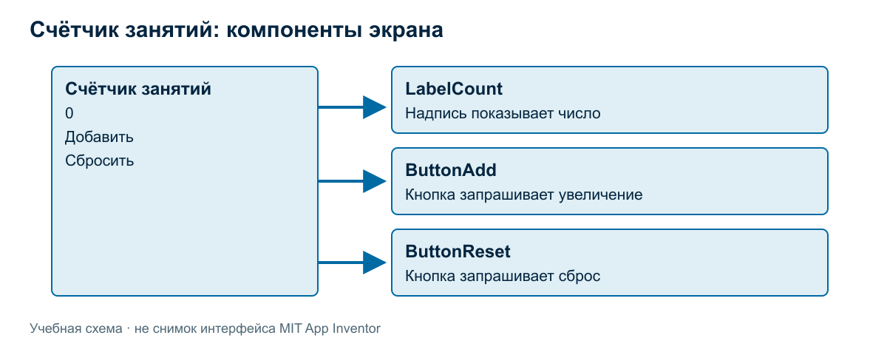
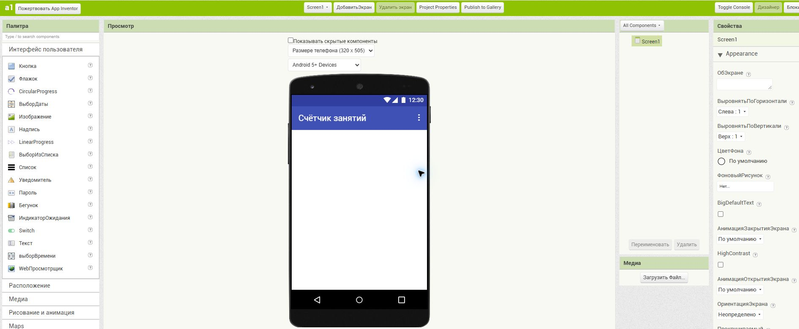
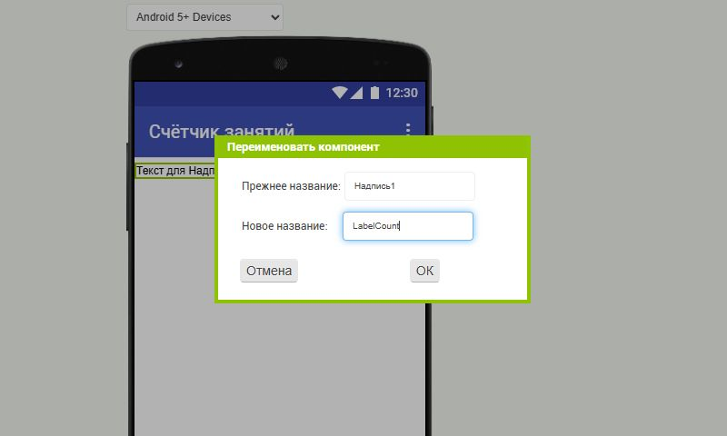
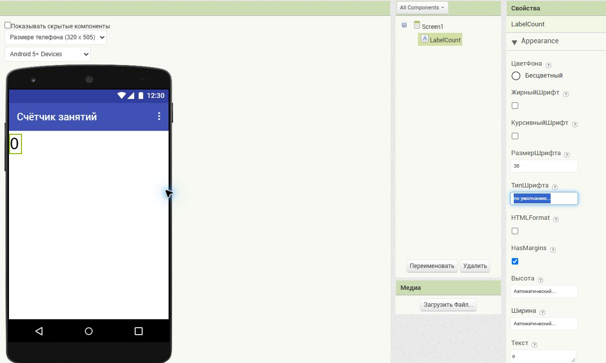
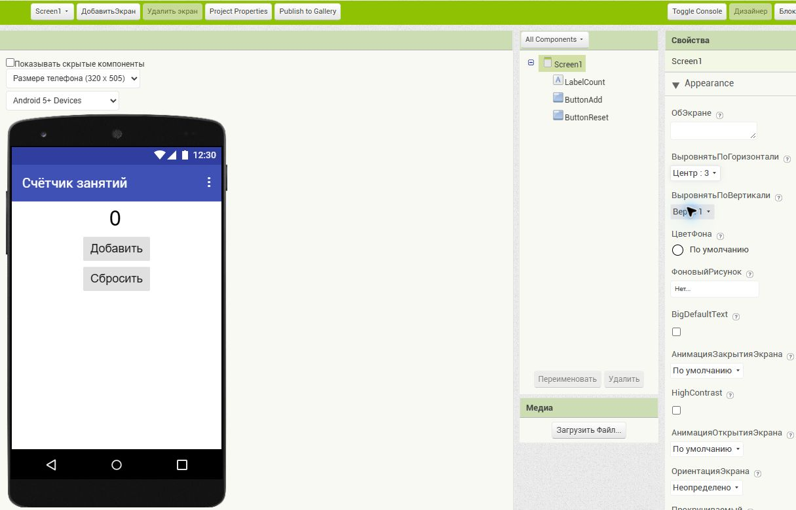
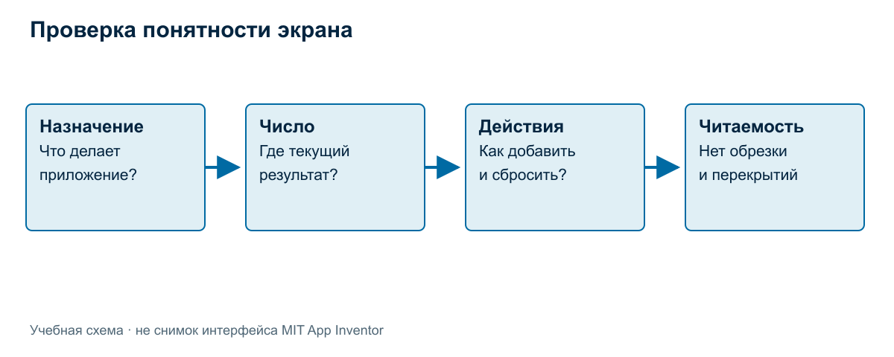

Собираем первый экран
Главная мысль: хороший первый экран позволяет понять назначение приложения и доступные действия без объяснения автора.
Сначала договоримся о результате
Первый экран должен удовлетворять нескольким проверяемым требованиям:
- пользователь видит название или пояснение назначения счётчика;
- текущее значение находится на заметном месте;
- доступны два различимых действия;
- подписи читаются, элементы не перекрывают друг друга;
- экран не требует угадывать назначение кнопок.
Это перечень проверяемых условий. Формулировка «сделать красиво» не объясняет, что именно улучшить. Формулировка «подпись кнопки обрезана, поэтому действие неясно» указывает на конкретную проблему.

Изображение — учебный макет, а не снимок Designer. Оно показывает состав и связи элементов. Не нужно копировать размеры и отступы пиксель в пиксель: разработчик должен получить понятный экран и обосновать расположение.
Создание и название проекта
Создайте проект в доступной среде. Для нового проекта можно использовать название LessonCounter. На снимках этой статьи работа выполнена в ранее созданном учебном проекте a1, который был очищен от пробных компонентов. Его название осталось прежним. Имя проекта и видимый заголовок экрана — разные значения.
Выберите Screen1 в дереве компонентов и в свойствах «Заголовок» задайте «Счётчик занятий».

Рисунок 1. В дереве компонентов пока находится только Screen1. Название приложения на экране уже задано; число и кнопки ещё не добавлены.
После первого изменения проверьте, что проект сохранился и его можно снова открыть. Точный порядок входа и запуска уточняется по доступной среде; неподтверждённые настройки и права не предполагаются.
Если среда недоступна, интерфейс можно спроектировать на бумаге по той же спецификации. Отметка «бумажный макет» помогает честно различать результаты.
Размещение компонентов
Сначала размещаем надпись со значением, затем кнопку увеличения и кнопку сброса. Для общей работы используем имена LabelCount, ButtonAdd, ButtonReset. Они помогают обсуждать элементы без фраз «вот эта кнопка». При наличии отдельного пояснения ему можно дать понятное имя, например LabelTitle.
| Компонент | Текст | Зачем нужен | Поведение после подключения логики |
|---|---|---|---|
LabelTitle, если используется |
Счётчик занятий | Объяснить назначение | Не меняется от нажатия |
LabelCount |
0 | Показать состояние | Показывает актуальное число |
ButtonAdd |
Добавить | Предложить увеличение | Запрашивает прибавление единицы |
ButtonReset |
Сбросить | Предложить сброс | Запрашивает возврат к нулю |
Последняя колонка описывает будущую логику. Её реализация рассматривается отдельно. Не смешивайте готовность интерфейса с готовностью обработчиков.
Добавляем надпись
В «Палитре» откройте «Интерфейс пользователя». Перетащите «Надпись» в белую область экрана в «Просмотре». В дереве появится компонент с исходным именем, например Надпись1.
Выберите его и нажмите «Переименовать» под деревом компонентов. В поле нового имени введите LabelCount, затем подтвердите кнопкой «ОК».

Рисунок 2. Переименование меняет внутреннее имя компонента. Текст, который увидит пользователь, задаётся отдельно.
В свойствах надписи установите «Текст» = 0 и «РазмерШрифта» = 36. Если поле не видно, прокрутите страницу. После изменения поля перейдите к другому полю, чтобы редактор применил значение.

Рисунок 3. В дереве выбран LabelCount; справа показаны его свойства. На экране виден начальный ноль.
Добавляем кнопки
Из той же категории палитры перетащите «Кнопка» на экран ниже надписи. Переименуйте компонент в ButtonAdd. В свойствах задайте «Текст» = Добавить и «РазмерШрифта» = 20.
Добавьте вторую кнопку ниже первой, переименуйте в ButtonReset и задайте «Текст» = Сбросить, «РазмерШрифта» = 20. Проверьте, что обе кнопки находятся непосредственно на Screen1 и идут в нужном порядке.
Выравниваем экран
Выберите Screen1. В свойстве «ВыровнятьПоГоризонтали» выберите «Центр : 3». Вертикальное выравнивание оставьте «Верх : 1». В этом простом варианте элементы располагаются последовательно сверху вниз.

Рисунок 4. Готов интерфейс: начальное число, две подписи действий и три понятных имени в дереве. Это предварительный вид в Designer; он ещё не является проверкой выполнения программы.
Числа 36 и 20 — настройки конкретного примера. В другом оформлении их можно изменить после проверки читаемости.
Текст и порядок действий
Наиболее заметным элементом делаем число. Рядом располагаем основное действие «Добавить», затем сброс. Сброс уничтожает текущий результат счётчика, поэтому его назначение должно быть явно написано. Сейчас не добавляем подтверждение сброса: это отдельное поведение, которого нет в минимальном задании.
Длинные подписи могут не помещаться на узком экране. Если текст обрезан, сначала упростите формулировку или измените размещение. Уменьшение шрифта до плохо читаемого размера переносит проблему на пользователя.

Цвет помогает выделить действие, но не заменяет подпись. Пользователь должен различать кнопки и без объяснения цветового кодирования. Для первого экрана достаточно спокойного фона и контрастных надписей.
Проверка на узком экране
Если доступен проверенный способ просмотра на устройстве, используйте его. Если нет, проверьте доступное представление в среде и отдельно отметьте, что реальный телефон ещё не проверялся. Бумажный макет рисуйте внутри узкой рамки телефона, а не на всей ширине листа.
Проходите один и тот же маршрут: прочитайте назначение, найдите число, найдите действие увеличения, найдите сброс. Отдельно проверьте обрезку подписей, перекрытия и необходимость неудобного поиска элементов.
Разобранный пример замечания. «Мне не нравится экран» не помогает автору. «На узком экране видна только часть слова “Сбросить”, поэтому действие непонятно» позволяет исправить ширину или размещение и повторить проверку.
Взаимная проверка
При проверке в паре участники меняются экранами или макетами. Другой человек без подсказки автора называет назначение приложения, текущее значение и две кнопки. Затем даёт одно конкретное замечание. Автор исправляет его или объясняет, почему предложенная правка ухудшит результат.
Взаимная проверка опирается на требования к интерфейсу. Два разных расположения могут удовлетворять требованиям. Основание оценки — понятность и проверяемые условия.
Задания
- Соберите экран из согласованных компонентов или подготовьте точный макет.
- Заполните таблицу «имя — текст — назначение» для своего варианта.
- Проверьте экран в узком представлении. Запишите найденное замечание либо способ проверки, если замечаний не обнаружили.
- Получите замечание от другого студента и внесите обоснованное исправление.
- Объясните, что уже готово, а что требуется добавить, чтобы два нажатия увеличили число до 2.
Самопроверка
Готовый экран показывает начальное значение 0 и два различимых действия. Объясните назначение каждого компонента и связь его внутреннего имени с видимой подписью. Проверьте читаемость и отсутствие перекрытий на узком экране.
Бумажный макет описывает будущий интерфейс, но не подтверждает запуск на телефоне. Успешное отображение экрана, в свою очередь, ещё не доказывает правильность обработчиков. Их работу рассматривает следующая тема.
Связанные материалы
Интерфейс MIT App Inventor и подключение телефона; Событие, переменная и изменение состояния.